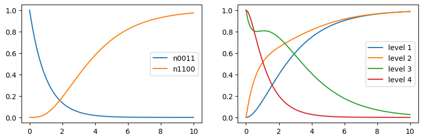

This notebook can be found ongithub
Four level system in many-body formalism
In this example, we illustrate the treatment of many-body quantum systems. A ManyBodyBasis can be used to describe indistinguishable particles that follow certain exchange symmetries (fermions or bosons). We can define an arbitrary quantum system - in this example a N-level system consisting of four energy states, and use it as foundation of a many-body basis. The basis states of the many-body basis then simply correspond to the number of particles that are in one of these four states. Which occupation states are included depends on the type of the particles (bosonic or fermionic) and if the particle number is preserved. For fermions the dimension of the Hilbert space is greatly reduced since it does not allow more than one particle in the same state (Pauli principle).
using QuantumOptics
using PyPlotFirst, we define the four-level system and a Hamiltonian with energies $0, 1, 2, 3$.
b = NLevelBasis(4)
H = diagonaloperator(b, [0, 1, 2, 3])Each of the states decays to the next lower one which we account for with the following jump operators.
j34 = transition(b, 3, 4) # decay from 4th into 3rd level
j23 = transition(b, 2, 3) # decay from 3rd into 2nd level
j12 = transition(b, 1, 2) # decay from 2nd into 1st levelOperator(dim=4x4)
basis: NLevel(N=4)
⋅ 1.0 + 0.0im ⋅ ⋅
⋅ ⋅ ⋅ ⋅
⋅ ⋅ ⋅ ⋅
⋅ ⋅ ⋅ ⋅Two fermions with conserved particle number
Now, as a first example, we consider two fermionic particles. Each of them can occupy one of the four levels in the system, but not at the same time. To this end, we define a many-body basis associated to this N-level system. Calculating the many-body operators from the corresponding N-level operators can be done with the manybodyoperator() function. Basically it uses the relation
\[ \tilde{A} = \sum_{st} c_s^\dagger c_t \langle u_s| A |u_t \rangle \]
to convert the one-body operator $A$ to the many-body operator $\tilde{A}$. Here, $|u_i\rangle$ is the $i$-th basis state of the initial basis (N-level system) and $c_s$ is the particle annihilation operator at site $s$.
b_mb = ManyBodyBasis(b, fermionstates(b, 2))
H_mb = manybodyoperator(b_mb, H)
j34_mb = manybodyoperator(b_mb, j34)
j23_mb = manybodyoperator(b_mb, j23)
j12_mb = manybodyoperator(b_mb, j12)
Γ = [3., 1., 0.5]
J_mb = [j34_mb, j23_mb, j12_mb]The resulting many-body operators will then account for the decay as defined for the four-level system. For example, the jump operator j34_mb will map the state $|0101\rangle$ to $|0110\rangle$, i.e. moving a particle from state 4 into state 3.
We can now calculate the time evolution according to a master equation, where the system is initially in the highest state $|0011\rangle$ and over time decays into the ground state $|1100\rangle$.
T = [0:0.1:10;]
Ψ0_mb = basisstate(b_mb, [0, 0, 1, 1])
tout, ρt = timeevolution.master(T, Ψ0_mb, H_mb, J_mb; rates=Γ)Now, we can analyze the system from two point of views. We can ask for the probability that the system is in a certain many-body state, e.g. $|1 1 0 0\rangle$ or $|0 0 1 1\rangle$. Alternatively, one might like to know how many particles are in a certain N-level state.
psi0011 = basisstate(b_mb, [0, 0, 1, 1])
psi1100 = basisstate(b_mb, [1, 1, 0, 0])
n0011 = psi0011 ⊗ dagger(psi0011)
n1100 = psi1100 ⊗ dagger(psi1100)
figure(figsize=(10, 3))
subplot(1, 2, 1)
plot(tout, real(expect(n0011, ρt)), label="n0011")
plot(tout, real(expect(n1100, ρt)), label="n1100")
legend()
subplot(1, 2, 2)
for i in 1:4
plot(tout, real(expect(number(b_mb, i), ρt)), label="level $i")
end
legend()
Three bosons with particle loss
As another example, we can instead consider three bosonic particles and additionally introduce particle loss. This results in many more possible basis states. We include this in the calculation by explicitly passing all possible particle numbers when creating the many-body basis, i.e. each state can be occupied by 0 to 3 particles.
b_mb = ManyBodyBasis(b, bosonstates(b, [0, 1, 2, 3]))
H_mb = manybodyoperator(b_mb, H)
j34_mb = manybodyoperator(b_mb, j34)
j23_mb = manybodyoperator(b_mb, j23)
j12_mb = manybodyoperator(b_mb, j12)In addition to the spontaneous decay of the four-level system, we now also define a particle annihilation operator and include it in the jump operators.
a1_mb = destroy(b_mb, 1) # Particles are lost from the first level
Γ = [0.9, 0.5, 0.3, 3.0]
J_mb = [j34_mb, j23_mb, j12_mb, a1_mb]
T = [0:0.1:10;]
Ψ0_mb = basisstate(b_mb, [0, 0, 0, 3]) # Initially, all particles are in the uppermost level
tout, ρt = timeevolution.master(T, Ψ0_mb, H_mb, J_mb; rates=Γ)figure(figsize=(5, 3))
plot(tout, real(expect(number(b_mb), ρt)), "--k", alpha=0.6, label="particle number")
for i in 1:4
plot(tout, real(expect(number(b_mb, i), ρt)), label="level $i")
end
legend()